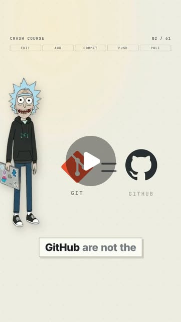

Instagram Reel

Git and GitHub are not the same thing. 🧵
video transcript (enriched by ClaudeClaw)
Summary
[CAPTION]
Git and GitHub are not the same thing. 🧵
Git is a version control system that runs on your machine.
[CAPTION]
Git and GitHub are not the same thing. 🧵
Git is a version control system that runs on your machine.
GitHub is a website that hosts Git repositories. That's it.
Here's the whole mental model in one picture — a change has to CLIMB:
📄 Your working directory — you edited a file, nothing is saved yet
📦 The staging area — "these are the exact changes I want in my next snapshot"
📚 The repository — git commit, and it becomes permanent history
☁️ The remote — git push, and now it exists on someone else's disk too
Everything else is just this:
• branch = a new line that lifts off a commit
• merge = that line folding back in
• merge conflict = two branches changed the same line, and Git won't guess
• revert = a NEW commit that undoes an old one (nothing is erased)
• reset = moves your branch pointer backwards (powerful, easy to misuse)
Git has hundreds of commands. 90% of the time you're doing four:
edit → git add → git commit → git push
And when you're working with other people: git pull BEFORE you push. 🙏
Save this for the next time a merge conflict ruins your afternoon.
Which command still confuses you the most? 👇
#git #github #versioncontrol #codingtips #programming
[VIDEO]
Let's do a Git crash course. And no, Git and GitHub are not the same thing. Git is a version control system. GitHub is a website that can host Git repositories. Now let's say you create a new project. You run git init that turns the folder into a git repository. Git now starts tracking the history of that project, but git doesn't automatically save every change you make. There are basically three important areas you need to understand your working directory, the staging area, and the repository. Let's say you edit app.js. That change exists only in your working directory. If you run git status, git will show you that the file has changed. Now you run git add app.js. That moves the change into the staging area. Think of staging as these are the exact changes I want in my next snapshot. Then you run git commit-m, add login page. Git creates a commit. A commit is basically a save snapshot of your project at that moment, and every commit gets its own unique identifier. Now imagine you want to build a new feature without messing up your main code. That's where branches come in. You can create one with git switch mines key new feature. Now you have a separate line of development, you make changes, add them, commit them. Meanwhile, the main branch stays untouched. Once the feature is ready, you can switch back git switch main and merge the branch git merge new feature. Git tries to combine both histories automatically, but sometimes two branches modify the same part of the same file. Git doesn't know which version you want. That's a merge conflict. Git marks the conflicting sections. You choose what the final code should look like and then commit the result. Now let's add GitHub. You create a repository online and connect it to your local repo using something called a remote. Usually that remote is called origin. When you run git push, your local commits are uploaded to the remote repository. When you run git pull, git downloads new changes from the remote and integrates them into your branch, and git clone that simply downloads an existing repository and it's git history onto your machine. Now here's one command that saves people constantly git log. It shows the history of commits, and if you break something, git gives you several ways to go backwards. Git restore can discard changes in files. Git revert creates a new commit that undoes an older commit. And git reset can move your branch pointer backwards, which is powerful, but also much easier to misuse. So if you only remember the basic workflow, remember this: edit your files, git add, git commit, git push. And when working with other people, git pull before you start pushing new work. Git sounds complicated because it has hundreds of commands, but 90% of the time you're really doing one thing: creating a clean history of how your code changed over time.
View original on Instagram Reel →